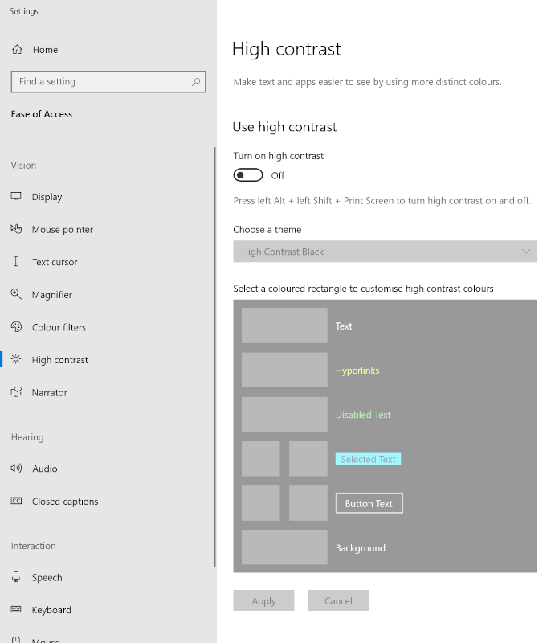
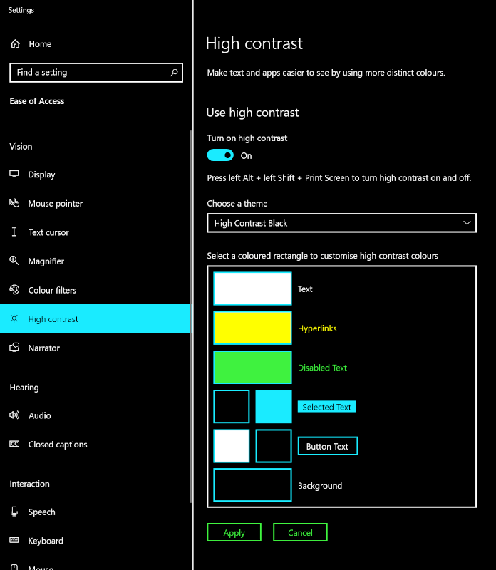
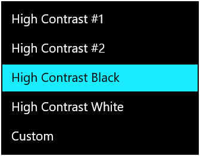

High Contrast Mode, for real
@CSSence
🗣 Matthias Zöchling
CSS in Graz
🌐 Graz, Austria
What?
(High) Contrast Mode?
The main feature is that it limits and controls the range of colors, making it easier for users to emphasize content and UI in a way that works for them.
In other words, they force colors.
Unlike other operating system display modes that invert colors or set a dark mode flag, Windows High Contrast Mode completely overrides authored colors with user-set colors.



⚠️ Low Contrast
High Contrast Mode is used by some to produce low contrast on the screen.
Why?
[Microsoft] has said that upwards of 4% of their users do [force colors].
How?
- First rule of ARIA: Don’t use ARIA.*
- First rule of High Contrast Mode:
Don’t design for High Contrast Mode.
*) …, use native HTML instead.
OS
- Windows 7-10: High Contrast Mode.
- Windows 11: Contrast Themes.
- Mac OS: It’s complicated, but no.
- Linux: No?
Browsers
Support is good.*
*) With Safari being the exception.
There is a ton of prior content discussing Windows High Contrast Mode (WHCM) and web content. The catch is that content covers four (five?) different implementations across more than a decade of support: Internet Explorer, Edge, the other Edge, Edge plus IE aliasing, and hardly anything on Firefox. Which means much of it no longer applies.
For real!
🥁
What happens… (1/2)
- Colors are replaced.
- Not SVG’s fill/stroke.
- Not CSS system colors.
- Border colors are replaced.
- Outline colors are replaced.
What happens… (2/2)
- Background colors are gone.
- Background images are …, well:
url()based images are kept,- but gradients are gone.
- Box & text shadows are gone.
The media query
@media (forced-colors: active*) {
…
}*) none | active
The other media query
@media (prefers-contrast: more*) {
…
}*) no-preference | more | less | custom
The future media query?
@media (prefers-contrast: forcedcustom) {
…
}— blogs.windows.com/msedgedev/2020/09/17/styling[…]-forced-colors
The retired media query
@media (-ms-high-contrast: active) {
…
}Combining media queries
@media (forced-colors: active) and
(prefers-color-scheme: dark) {
…
}The ToDo List (1/2)
- CSS system colors
:focus:hover,:active, etc.- Whitespace & borders
- Buttons vs. links
Transparent is a color
:focus {
outline: none;
outline: 0.125rem solid transparent;
box-shadow: 0 0 0.25rem #bada55;
}The ToDo List (2/2)
- Icons
opacity- The Media Query
- The Backplate
- The Override
The Backplate
Image on the right has backplate applied.
The Override
.element {
forced-color-adjust: none*;
}*) auto | none | preserve-parent-color
Outro
⚠️ Testing
Always test multiple themes, especially …
- 1× “Light on Dark” and
- 1× “Dark on Light”.
⚠️ color(s)
@media (forced-colors: active) {
…
}
.element {
forced-color-adjust: none;
}You’ve made it this far!
🙌